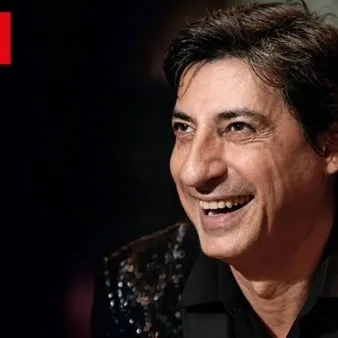

da mar 3 nov a mer 4 nov · dalle 20:30
Falstaff - l'arte di farla franca
3 e 4 Novembre ore 20:30 Autentico mattatore della scena, Emilio Solfrizzi è protagonista di una commedia divertente e gradevolmente amara, capace di parlare al pubblico di oggi con straordinaria lucidità. Sir John Falstaff è un affabulatore instancabile, un seduttore fuori…
 Indicazioni
Indicazioni
- Costi e prenotazioni
- Costo non indicato · Prenotazione non indicata
- Programma
- Programma da verificare. Apri la fonte ufficiale per orari e possibili aggiornamenti.
- In caso di maltempo
- Nessuna indicazione specifica pubblicata.
- Note
- Acquisito automaticamente dalla fonte.
L’EVENTO
Descrizione completa
Autentico mattatore della scena, Emilio Solfrizzi è protagonista di una commedia divertente e gradevolmente amara, capace di parlare al pubblico di oggi con straordinaria lucidità . Sir John Falstaff è un affabulatore instancabile, un seduttore fuori tempo massimo, un debitore cronico che ha trasformato l’inganno in stile di vita. Gestore di un locale sull’orlo del fallimento, attraversa il mondo con la stessa arroganza vitale del Don Giovanni di Molière e la vitalità sfrontata del Falstaff shakespeariano: ride della morale, dell’onore, del destino e perfino della morte, confidando nella propria capacità di “farla franca”, sempre e comunque. Lo circonda una galleria di personaggi grotteschi e realistici insieme: servi complici e traditori, creditori manipolabili, mariti ossessionati dal possesso, e soprattutto due donne, Margaret e Alice. Saranno proprio loro, come nelle Allegre comari di Windsor , a smascherarlo usando l’arma più temibile contro chi vive di vanità: il ridicolo. Una commedia sul potere della parola, sull’inganno come linguaggio del mondo e sull’illusione, tipicamente umana, di poter vivere senza mai pagare il prezzo delle proprie scelte. Liberamente ispirato a Shakespeare e Molière Con Emilio Solfrizzi e con Giorgio Borghetti e con Matteo Mauriello, Ivan Olivieri, Claudia Ferri, Marika De Chiara, Cristiano Dessì Scene Fabiana Di Marco , luci Luigi Della Monica , costumi Luciana Donadio Musiche originali Davide Cavuti Testo e regia Davide Sacco
Biglietti presto disponibili presso le rivendite ufficiali, la biglietteria del teatro e l'infopoint culturale di via Rialto
IL PROGRAMMA
Programma e orari
Appuntamenti raccolti dalle fonti elencate. Dove manca un orario, non è ancora disponibile in questa scheda.
Programma pubblicato
- Dal 2026-11-03 al 2026-11-04
INFORMAZIONI UTILI
Prima di partire
- Controllare la fonte prima di partire.
ORGANIZZAZIONE